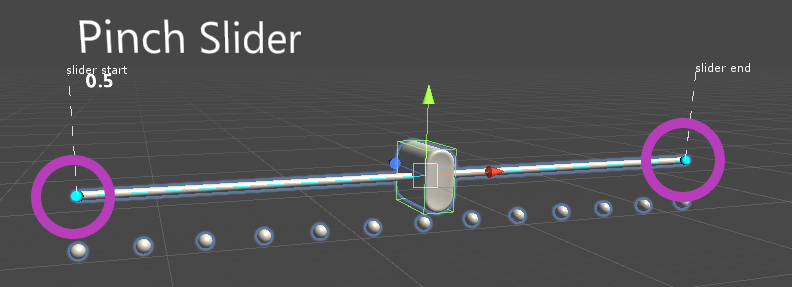

滑动条 Sliders

滑动条是一种UI组件，它允许您通过在轨道上移动滑动条来不断地更改值。目前，按压滑动条(Pinch Slider)可以通过直接抓取滑动条来移动，可以是直接的，也可以是远距离的。滑动器可用于AR和VR，使用动作控制器、手或手势+语音。
示例场景
你可以在SliderExample场景中找到例子: MixedRealityToolkit.Examples/Demos/UX/Slider/Scenes/
如何使用滑动条
将预置的PinchSlider拖放到场景hierarchy中。如果您想修改或创建自己的滑动条，请记住执行以下操作:
确保你的拇指对象上有一个碰撞器。在PinchSlider预置体中，碰撞器在
SliderThumb/Button_AnimationContainer/Slider_Button上确保包含碰撞器的对象也有一个Near Interaction Grabbable 组件，如果你想能够抓取附近的滑动条。
我们还建议使用以下层次结构
- PinchSlider - 包含 sliderComponent
- SliderThumb - 包含 movable thumb
- TrackVisuals - 包含 track 和任何其它 visuals
- OtherVisuals - 包含任何其它visuals
滑动事件
滑动条显示以下事件:
- OnValueUpdated - 每当滑动条值改变时调用
- OnInteractionStarted - 当用户抓取滑动条时调用
- OnInteractionEnded - 在用户释放滑动条时调用
- OnHoverEntered - 当用户的手/控制器悬停在滑动条上时调用，使用远近交互。
- OnHoverExited - 当用户的手/控制器不再靠近滑动条时调用。
配置滑动条绑定和轴
通过在场景中移动两端端点，可以直接移动滑动条的起始点和结束点:

您还可以通过 Slider Axis 字段指定滑动条的轴(在本地空间中)
如果不能使用端点，则可以通过 Slider Start Distance 和 Slider End Distance 字段指定滑动条的起始点和结束点。它们指定滑动条的开始/结束位置，距离为到滑动条中心的距离，在本地坐标中。这意味着一旦你设置了滑动条开始和结束的距离，你可以缩放滑动条的大小，而不需要更新开始和结束的距离。
Inspector 属性
Thumb Root包含滑动条拇指的游戏对象。
Slider Value滑动条的值。
Track Visuals 它包含了沿着滑动条运行所需的Track Visuals的游戏对象。
Tick Marks 游戏对象，包含所需的标记，沿着滑动条。 Thumb Visuals 游戏对象，包含所需的拇指视觉沿着滑动条。
Slider Axis 滑动条移动的轴。 Slider Start Distance 滑动条轨迹开始的地方，为从中心沿滑动条轴的距离，在本地空间单位中。 Slider End Distance 在本地空间单位中，滑动条轨迹结束的位置，为从中心到滑动条轴线的距离。
当用户在编辑器中更新滑动条轴值时，如果指定了跟踪可视化(Track Visuals)或刻度可视化(Tick Visuals)，则它们的transform将被更新。 具体来说，它们的本地位置被重置，它们的本地旋转被设置为匹配滑动条轴的方向。 它们的比例没有被修改。 如果标记具有Grid Object Collection 组件，那么布局和单元格宽度或单元格高度将相应地更新以匹配滑动条轴。